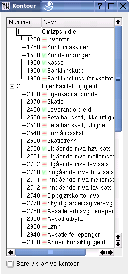
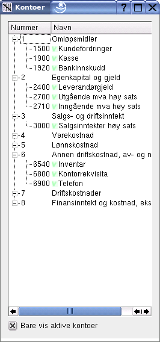
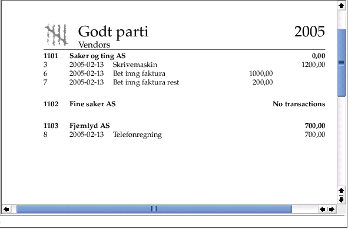

Gryn, an accounting program for GNU/Linux |
The program is presently in an alpha state, i.e. most of the functionality is present, but so are probably more or less serious bugs. Gryn is therefore not suitable for serious book keeping yet. To try the program you can download the full source package here.
Gryn is, and shall remain, an independent unit to be used for an independent task: to keep accounting books. Other business activities will usually be performed by other persons at other times and are best served by other programs. Examples of such tasks not fit to be mixed with an accounting unit are invoicing and payroll.
However, transfer of data between programs is useful. The present version of Gryn can import data from an fictive invoice program. Invoice data are queued in the database and fetched by Gryn at the book keeper's demand. All invoices are then automatically entered into the books. Gryn will share the database with other programs, so e.g. information about a customer will be available to both the invoice and Gryn programs.
The upper fields are for date and source reference number. Next comes a text entry field for customer or vendor. This field uses regular expressions, so only part of a name have to be entered. The third line is a text for describing the transactions. If a rule is used and the Auto-box is checked the default text of the rule is used. A rule may be chosen from the combo box.
When a customer or vendor is specified all related invoices not fully payed are listed. If one of them is clicked the amount and account will automatically be entered in the posting list. Below this subsidiary ledger reference list one may choose the VAT rate and if the amounts given below is net or including VAT.
Postings are entered by stating the account and amount. Accounts are given by number or by part of the account name (regular expression). When entering an amount any VAT rate given by the VAT combo box will be calculated and posted.
Any imbalance between debit and credit is displayed below the list box. By pressing a 'rounding'-button any imbalance will be automatically posted to a rounding account.
A set of postings may be automated by rules. The dialog at the left shows an example of a rule definition. Here we define the name of the rule to appear in the rule combo box, the default descriptive text and a number of parameters. Parameters are usually amounts (the M-box is checked) or real numbers e.g. a percentage. We define a parameter name (used when executing the rule) and a text used for the dialog.
The prelude is regular Python code to be run before the postings are calculated. Below are the definitions of the postings, i.e. the account, side (debit or credit) and a python expression to be evaluated.
The dialog to the right pops up when this example rule is used. All defined parameters are listed and the user fills in the amounts or percentages.
 
The chart of accounts window displays a tree of accounts and may be open at all times. The accounts which are used are marked with a green tick. The window to the right shows the same chart, but in this case only the used accounts are included.
If the user clicks an account a signal will be generated. This signal includes the account instance and may be caught by other parts of the program. As an example: if one is about to fill in the account name in a posting list the clicked account number and name will automatically be filled into the appropriate fields.
The screen shot shows the first sources year 2005 for the company 'Godt parti'. Source number 0 and 1 are used for any transfers from the previous year. Number 0 is automatically generated and number 1 is reserved for any manual corrections. In this example there is not transfers.
For every source the source reference number, date, possibly a customer or vendor name and the descriptive text appear at the first line. Then follows the postings: account number and name and amount. Any reference through the subsidiary ledger is also shown, like in the last line of source number 3. This invoice was payed by two transfers as per source number 6 and 7.
This example shows the transactions for some of the vendors of 'Godt parti'. In this case all transactions relating to each vendor is present. One may also use a filter, e.g. to include only the vendors with unsettled invoices.
Clicking the printer icon will print the report, part of the first page printed is displayed below.

The GUI is implemented by the Qt-library through the PyQt/sip library. Qt is present in most Linux distributions.
MySql is used for data storage, but other databases or XML-file storage may be implemented by adding code in the storage backend.
LaTeX is used for report printing. The basic macros are defined, so producing new kinds of reports are fairly simple.
Although the primary locale now is Norwegian, the program is written and commented in English. So a fairly English version can be achieved by disabling the locale.
| Copyright 2005 Odd Arild Olsen |